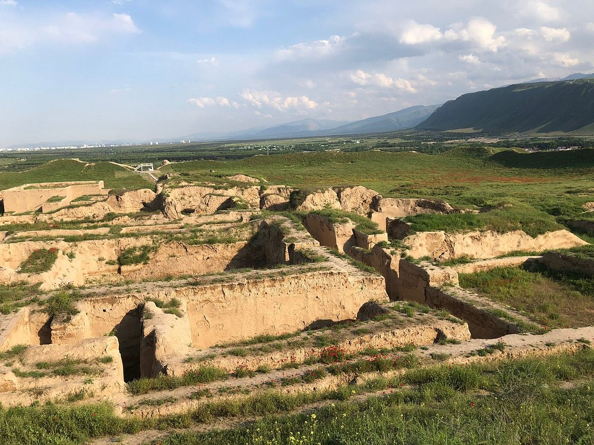

TOP 5 PLACES TO GO

Kow Ata
Descend into the heart of the Köpetdag mountains to discover this
mystical subterranean lake. Bathed in a perpetual warm glow, its
turquoise, mineral-rich waters remain a steady 33-37°C
year-round—a tranquil, ethereal sanctuary hidden deep beneath the
earth.
National Museum of Turkmenistan
National Museum of History and Ethnography of Turkmenistan is
located in its capital, Ashgabat. The Museum was opened in
November 1998. It has s rich collection of ancient artifacts from
Turkmenistan. More than 500,000 exhibits are displayed here. It
has 9 halls, each dedicated to a certain period or theme.

Parthian Fortresses of Nisa
Nisa was an ancient settlement of the Parthians, located near the
Bagyr neighborhood of Ashgabat, Turkmenistan, 18 km west of the
city center. Nisa is described by some as the first seat of the
Arsacid Empire.
State Historical and Cultural Park Ancient Merv
Merv is the oldest and best-preserved of the oasis-cities along
the Silk Route in Central Asia. The remains in this vast oasis
span 4,000 years of human history. A number of monuments are still
visible, particularly from the last two millennia.
Darvaza Gas Crater
The Darvaza gas crater is a collapsed natural gas field located
near the village of Darvaza in Turkmenistan. In 1971, Soviet
geologists drilling for oil inadvertently struck a cavern filled
with natural gas, causing the ground beneath their rig to collapse
into a wide crater. To prevent the release of toxic methane gas,
the team decided to set it on fire, expecting the fuel to burn off
within a few weeks. Instead, the crater has remained ablaze for
over 50 years, creating a dramatic, glowing spectacle in the
middle of the Karakum Desert.